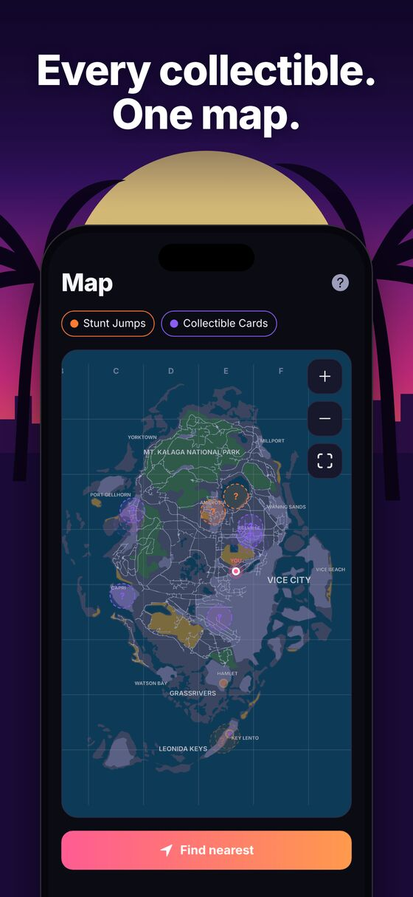
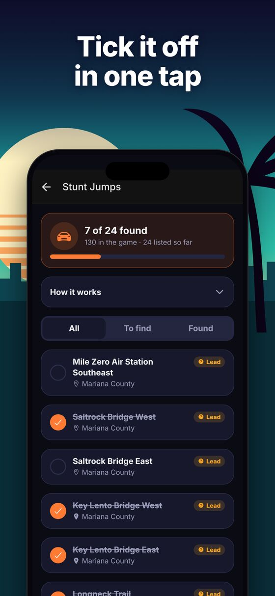
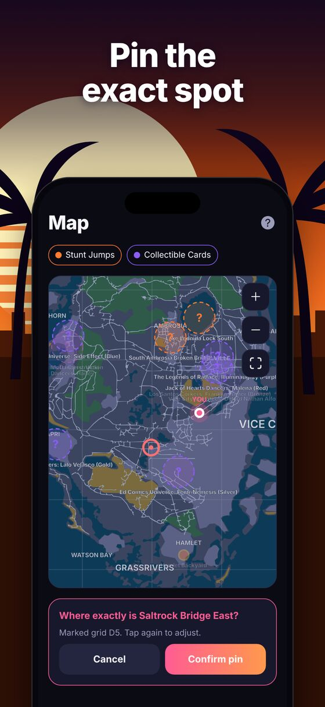
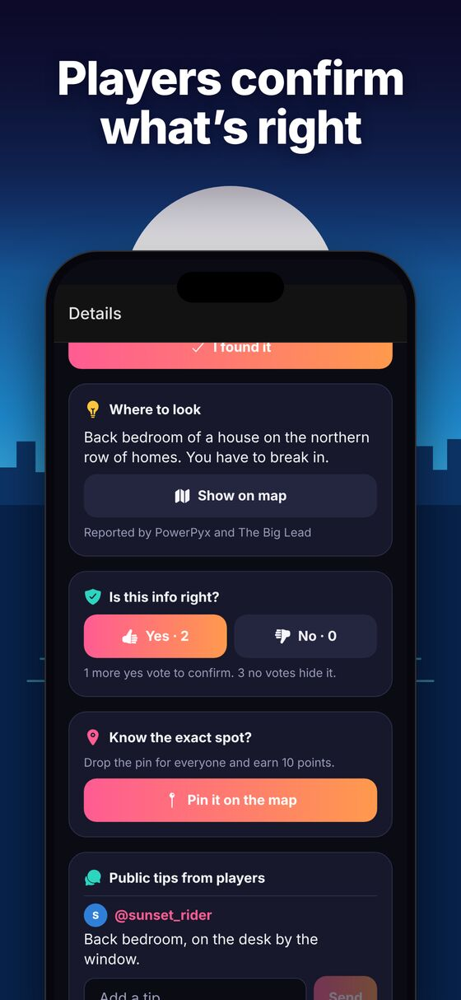
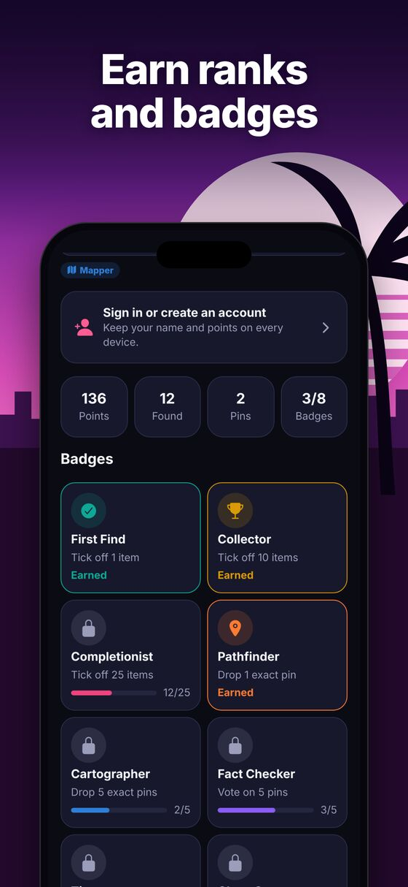
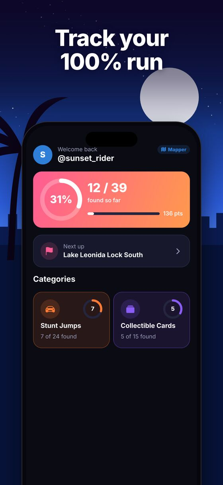
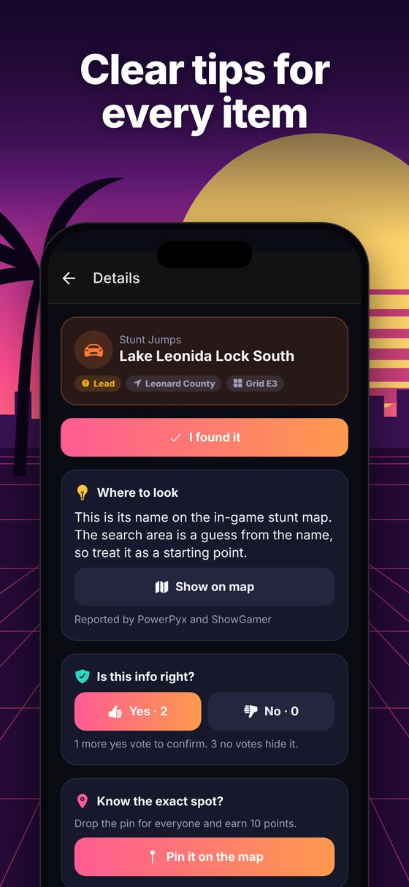
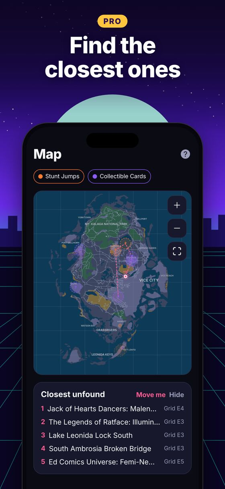
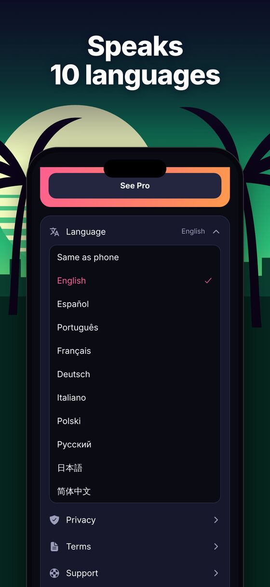
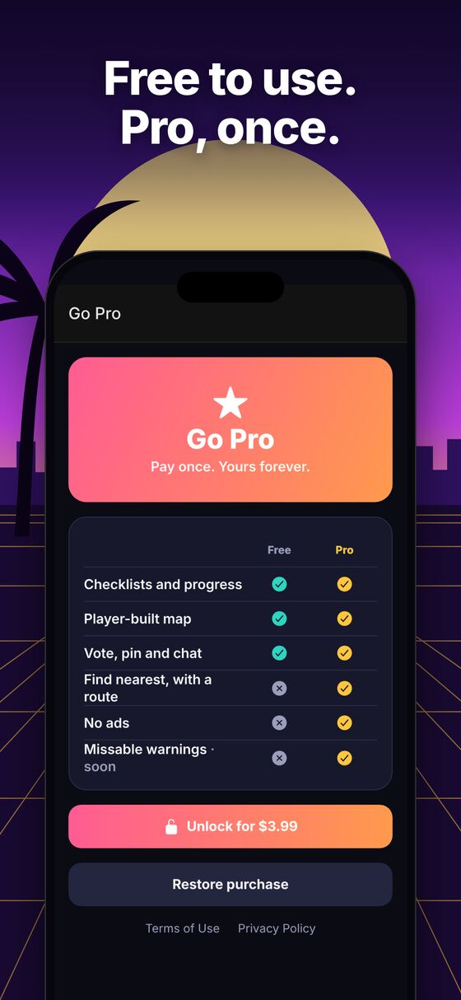

Tick off every stunt jump and collectible, see where to look on a map built by players, and know which spots are confirmed before you drive there.

Three things to do, and each one earns you points.
Mark each item the moment you find it. Your progress ring and category counts update straight away.
Know exactly where something is? Drop the pin on the map so the next player goes straight to it.
Pins, votes and tips earn points. More points means a higher rank, more badges, and votes that count for more.

Every category has its own list and progress ring, so you always know what is left and what to go for next.

Each item starts as a lead: a search area based on reports. When a player finds the exact spot they pin it. Once enough players agree, it becomes verified.

Every item asks one question: is this info right? Vote yes or no after you have been there.

Start as a Scout and climb. Badges mark what you have done, from your first find to finishing a whole category.
The small things that make a 100% run easier.
Every item has tips from players who found it. Everything is public; there are no private messages. You can report or block anyone.
Pro shows your five closest items you have not found yet, with a route between them.
English, Spanish, Portuguese, French, German, Italian, Polish, Russian, Japanese and Simplified Chinese.
Swipe through the screens.





Everything you need to track a full run is free. Pro is a single payment, not a subscription.
The short answers.
No. Open World Tracker is an unofficial guide made by fans. It is not affiliated with, endorsed by or sponsored by Rockstar Games or Take-Two Interactive.
Each item starts from published reports that agree with each other, written up in our own words. Players then pin the exact spot and vote on whether it is right.
Open the item and vote "No" under "Is this info right?". Three "No" votes hide it.
Not to track your progress. You need an account to vote, drop pins and post, because those are shared with other players.
No. It is one payment. If you change phones, use "Restore purchase" on the Pro screen.
It is out now for iPhone: download it on the App Store. Android will follow.